Plausible indexes can hurt
An index can talk the planner into a worse join order. Only measuring the work the database actually did catches that. The execution plan won't.
An RL environment that gives a coding agent a slow SQL query, its own copy of the database and a shell, and asks it to tune the query. It is scored on the work a database server actually does, so the textbook answer doesn't get full marks.
On a laptop, tuning means "finish as fast as possible". On a server with many clients it means something else: use as few resources as possible, so the same hardware can serve as many clients as possible.
For a database query, that resource is the blocks it reads. Not rows, not table accesses, not a clean-looking execution plan. A plan shows what the engine intends to do, not necessarily what it does. So the environment measures pages read and rewards nothing else.
Concretely: page-cache hits plus page-cache misses, meaning every page the engine asked for, whether it was already in memory or not. That makes the number independent of cache state and of the operating system. Oracle DBAs know the same idea as consistent gets.
The agent submits two things: the rewritten query, and any supporting DDL such as indexes or ANALYZE. There are two tasks today, of increasing difficulty.
"Add the obvious indexes until the plan shows no full scans" is all over the internet, and a model trained on it converges there. The usual heuristics report success while the query stays far more expensive than it needs to be.
Reaching the reference solution means reading what the database actually did, not what it planned to do. That gap separates a senior DBA from a checklist, and it's the gap this environment measures. See the numbers.
In one 20-run batch, three runs submitted a correct rewrite together with two join indexes any code reviewer would approve. The query read almost four times more pages than the same rewrite with no indexes at all. Meanwhile the execution plan looked better: full-scan steps fell by more than half. A grader that scores plan shape would have paid for that. This one scores it 0.0.
An index can talk the planner into a worse join order. Only measuring the work the database actually did catches that. The execution plan won't.
Neither part of the reference solution pays on its own. Some indexes only help once the query is rewritten so the planner can use them.
The right indexes do nothing for the untuned query, and the rewrite alone captures only part of the gain. The scoring forces the agent to find both, the way a senior DBA would.
That band is where an environment is useful for training. Every model earns partial credit most of the time, and the best ones still miss the reference solution in about half their runs.
Scored on logical reads. Original query: 11,238 pages. Reference solution: 115 pages.
Solve rate and mean reward disagree, and both are informative. Claude Fable 5 averages 0.89 but reaches the reference solution in only 2 of 5 runs. It gets close every time. Claude Opus 5 reaches it 3 times, yet averages 0.69, because its misses fall back to 0.24.
A binary grader would score both as "sometimes passes". A monotonic reward shows which model is consistently close and which one is all-or-nothing. A policy can learn from that difference.
Task 1 is the calibration tier: frontier models saturate it, while smaller and open models still spread out. Task 2 is where the frontier separates. A training curriculum needs both.
Original query: 978 pages. Reference solution: 149 pages.
| Model | Runs scored | Fully solved | Mean reward |
|---|---|---|---|
| Claude Opus 5 | 10 | 10 | 1.00 |
| GPT-5.6 Sol | 10 | 10 | 1.00 |
| Gemini 3.6 Flash | 9 | 8 | 0.96 |
| GLM 5.2 | 10 | 5 | 0.84 |
| DeepSeek V4 Flash | 20 | 4 | 0.77 |
| DeepSeek V4 Pro | 20 | 2 | 0.66 |
0.0 for no improvement on the original query, 1.0 for matching the reference solution, and every page saved in between counts. The scale is logarithmic, because tuning gains are multiplicative: a DBA reports "ten times fewer reads", not "3,867 fewer pages".
The same submission always gets the same score. Both ends of the scale are measured in the same container as the submission, never read from a stored number, because a page count is only valid for one database engine version.
A submission that doesn't apply, doesn't run, or returns different rows from the original scores 0.0, however few pages it read. Fast and wrong is worth nothing.
The agent's own database copy is a scratch area to experiment on, and that's part of the job. Grading applies only the submitted query and DDL to a fresh copy. That closes the cheapest trick: deleting the data makes any query fast.
The prompt rules out composite indexes, partial indexes and materialized views, and the grader checks all three. Each of them, unchecked, would beat the reference solution outright, so a rule that's only stated is no rule at all.
One Docker container per rollout, in a digest-pinned image with the database engine version asserted at build time. The image runs with no network egress, so the environment works in a locked-down training cluster.
Built on Prime Intellect's verifiers framework, using its bash harness and Docker runtime.
I write tasks the way I tuned production Oracle systems for 20 years: starting from what the database actually does. That domain depth is what makes a task hard in the right way.
Use the existing SQL performance-tuning tasks and grader in your own training or evaluation pipeline. Delivered as a verifiers environment with a pinned container image.
New tasks and environments for database and performance engineering, calibrated to the difficulty band you need. SQLite today; PostgreSQL and Oracle, which report logical reads directly, are next.
A second pair of eyes on your environments: reward-hacking paths, unenforced rules, non-determinism, and metrics that measure the machine instead of the model.
The model, run count and reward lines straight from the verifiers eval runs behind the numbers above. Click to enlarge.
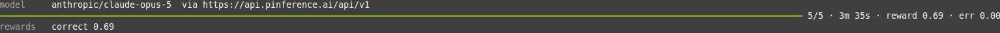
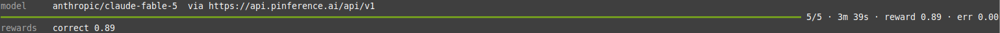
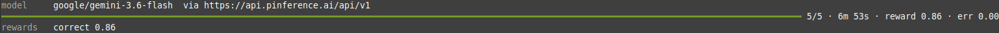
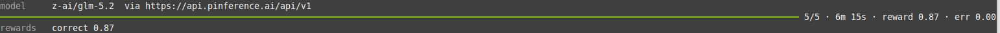
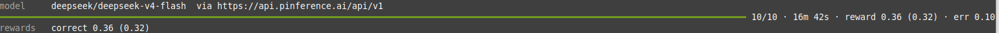
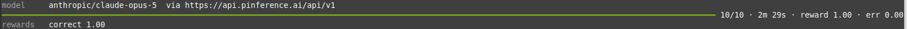
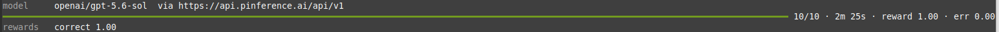
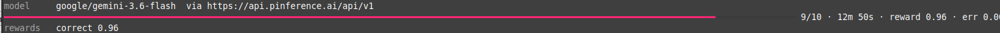
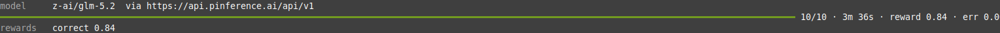
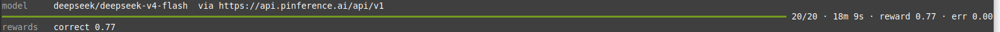
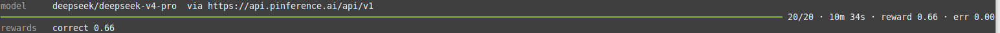
I'm happy to demo the environment under NDA, walk through the reward design, or scope a custom build.